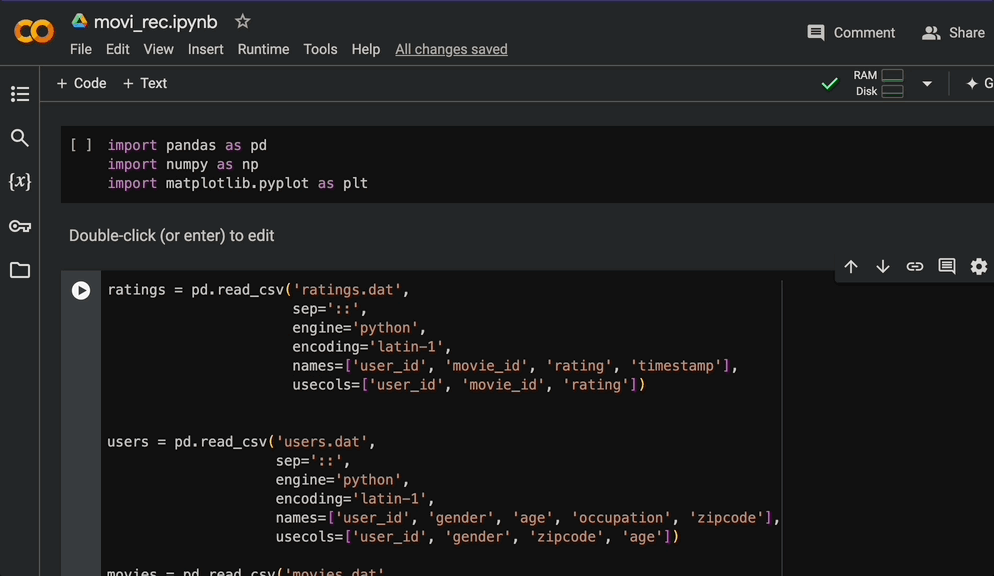
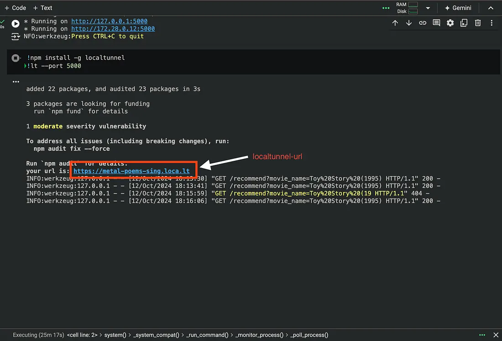
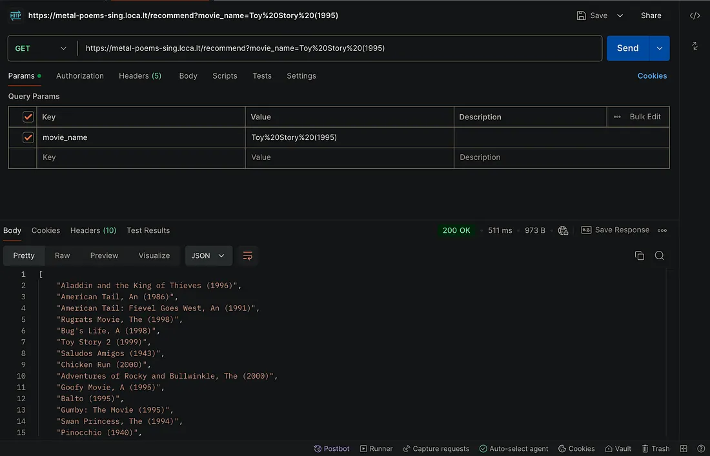

Recommendation systems have become a fundamental part of platforms like Netflix and YouTube. By suggesting content based on user behavior or similarities, they help personalize user experiences. In this article, we’ll create a simple recommendation system that suggests movies based on their genres using Python.
Google Colab is a free cloud-based environment that allows you to run Python code directly in your browser. Let’s set up our project in Colab and get started.
We’ll use the
MovieLens 1M dataset
for this project.
You can find a variety of movie datasets on the following website:
GroupLens

Upload the dataset in Colab, then import the necessary libraries and datasets.
import pandas as pd
import numpy as np
import matplotlib.pyplot as plt
We’ll now load the ratings, users, and movies datasets:
ratings = pd.read_csv('ratings.dat',
sep='::',
engine='python',
encoding='latin-1',
names=['user_id', 'movie_id', 'rating', 'timestamp'],
usecols=['user_id', 'movie_id', 'rating'])
users = pd.read_csv('users.dat',
sep='::',
engine='python',
encoding='latin-1',
names=['user_id', 'gender', 'age', 'occupation', 'zipcode'],
usecols=['user_id', 'gender', 'zipcode', 'age'])
movies = pd.read_csv('movies.dat',
sep='::',
engine='python',
encoding='latin-1',
names=['movie_id', 'title', 'genres'],
usecols=['movie_id', 'title', 'genres'])
Now that we have the dataset, we’ll clean and preprocess it for our recommendation model. We’ll first collect all unique genres from the dataset.
genre_labels = set()
for s in movies['genres'].str.split('|').values:
genre_labels = genre_labels.union(set(s))
We’ll now define a function to count how frequently each genre appears.
def count_word(dataset, ref_col, census):
keyword_count = dict()
for s in census:
keyword_count[s] = 0
for census_keywords in dataset[ref_col].str.split('|'):
if type(census_keywords) == float and pd.isnull(census_keywords):
continue
for s in [s for s in census_keywords if s in census]:
if pd.notnull(s):
keyword_count[s] += 1
keyword_occurences = sorted(keyword_count.items(), key=lambda x: x[1], reverse=True)
return keyword_occurences, keyword_count
# Get genre occurrences
keyword_occurences, dum = count_word(movies, 'genres', genre_labels)
print(keyword_occurences[:5])
Next, we’ll split the genres into an array and convert them into strings.
movies['genres'] = movies['genres'].str.split('|')
movies['genres'] = movies['genres'].fillna("").astype('str')Now, let’s build a recommendation system based on genre similarity.
We’ll use TfidfVectorizer to transform the genres into numerical values, which will allow us to calculate their similarity.
from sklearn.feature_extraction.text import TfidfVectorizer
tf = TfidfVectorizer(analyzer='word', ngram_range=(1, 2), min_df=1, stop_words='english')
tfidf_matrix = tf.fit_transform(movies['genres'])
We’ll calculate the cosine similarity between different movies based on their genres.
from sklearn.metrics.pairwise import linear_kernel
cosine_sim = linear_kernel(tfidf_matrix, tfidf_matrix)
print(cosine_sim[:4, :4])
We now define a function to get movie recommendations based on genre similarity.
# Create a mapping from movie titles to indices
titles = movies['title']
indices = pd.Series(movies.index, index=movies['title'])
def genre_recommendations(title):
idx = indices[title]
sim_scores = list(enumerate(cosine_sim[idx]))
sim_scores = sorted(sim_scores, key=lambda x: x[1], reverse=True)
sim_scores = sim_scores[1:21]
movie_indices = [i[0] for i in sim_scores]
return titles.iloc[movie_indices]
Let’s test our system with a popular movie title:
print(genre_recommendations('Toy Story (1995)').head(5))Now that we have a working recommendation system, we’ll build an API to expose it to the web.
!pip install FlaskWe will create a simple Flask application to serve movie recommendations.
from flask import Flask, jsonify, request
from threading import Thread
app = Flask(__name__)
@app.route('/recommend', methods=['GET'])
def recommend():
movie_name = request.args.get('movie_name')
if not movie_name:
return jsonify({"error": "Movie name is required"}), 400
try:
recommendations = genre_recommendations(movie_name)
return jsonify(recommendations.tolist())
except KeyError:
return jsonify({"error": "Movie not found"}), 404
def run():
app.run(host='0.0.0.0', port=5000)
# Start the app
thread = Thread(target=run)
thread.start()WARNING: This is a development server. Do not use it in a production deployment. Use a production WSGI server instead (e.g., Gunicorn or uWSGI) for deploying Flask applications.
To expose our local Flask server, we’ll use localtunnel:
!npm install -g localtunnel
!lt --port 5000You can now test the API using Postman with a GET request. Simply enter the following URL in the request
https:///recommend?movie_name=Toy%20Story%20(1995) Make sure to replace


In this article, we have learned how to build a basic movie recommendation system using Python and how to deploy it via an API with Flask. You can now enhance this system by incorporating additional features like user ratings, content-based filtering, and more!
For the code, check out their GitHub repository: Movie Recommender with Flask.